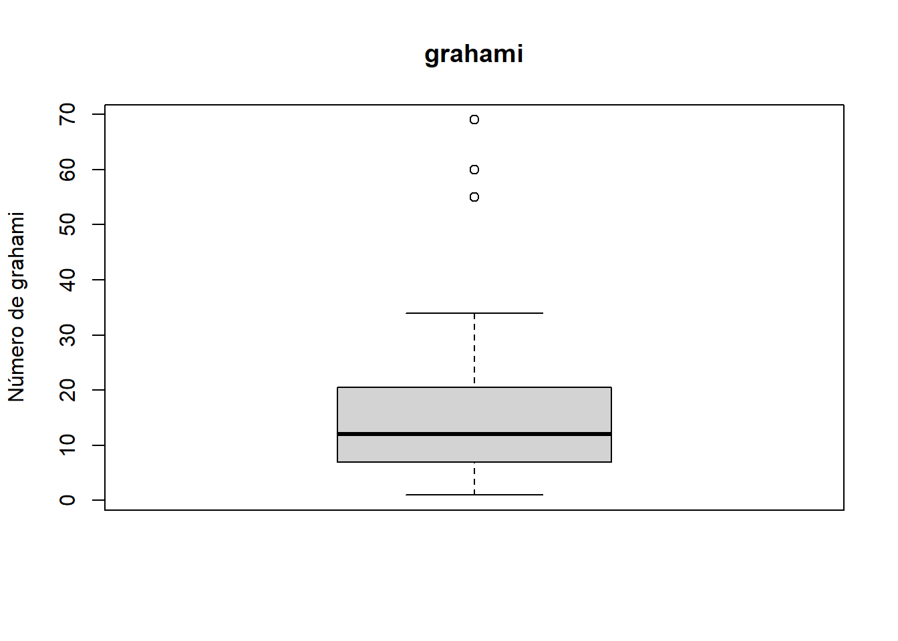

library(detectseparation) # datos lizardsWarning: package 'detectseparation' was built under R version 4.4.3library(detectseparation) # datos lizardsWarning: package 'detectseparation' was built under R version 4.4.3Se recopilaron datos sobre los hábitos diurnos de dos especies de lagartijas: grahami y opalinus. Las observaciones se realizaron registrando las características del sitio ocupado o percha. Para cada observación se anotaron:
data("lizards")
lizards grahami opalinus height diameter light time
1 20 2 <5ft <=2in sunny early
2 8 1 <5ft <=2in sunny midday
3 4 4 <5ft <=2in sunny late
4 13 0 >=5ft <=2in sunny early
5 8 0 >=5ft <=2in sunny midday
6 12 0 >=5ft <=2in sunny late
7 8 3 <5ft >2in sunny early
8 4 1 <5ft >2in sunny midday
9 5 3 <5ft >2in sunny late
10 6 0 >=5ft >2in sunny early
11 1 1 >=5ft >2in sunny late
12 34 11 <5ft <=2in shady early
13 69 20 <5ft <=2in shady midday
14 18 10 <5ft <=2in shady late
15 31 5 >=5ft <=2in shady early
16 55 4 >=5ft <=2in shady midday
17 13 3 >=5ft <=2in shady late
18 17 15 <5ft >2in shady early
19 60 32 <5ft >2in shady midday
20 8 8 <5ft >2in shady late
21 12 1 >=5ft >2in shady early
22 21 5 >=5ft >2in shady midday
23 4 4 >=5ft >2in shady lateSe desea comparar dos especies de lagartijas (grahami y opalinus) con respecto a sus preferencias por sitios de percha. Se asume que:
La probabilidad de detectar un sitio ocupado es la misma para ambas especies.
El objetivo es comparar a las dos especies de lagartijas (grahami y opalinus) en cuanto a su ocupación de diferentes tipos de perchas, caracterizadas por altura, diámetro, luz (sol/sombra) y momento del día.
Para cada combinación de estas variables, se fija el número total de sitios ocupados observados (m_{ijkl}).
i: Altura de la perchaj: Diámetro de la perchak: Condición de luz (soleado o sombreado)l: Momento del día (temprano, medio día o tarde)La variable respuesta Y_{ijkl} es el número (o proporción) de sitios ocupados por grahami entre los m_{ijkl} observados. Se modela como una binomial con índice m_{ijkl} y probabilidad π_{ijkl} de que un sitio ocupado lo sea por grahami.
Por ejemplo: - De 22 perchas observadas temprano en el día, con diámetro pequeño, bajas y en sol, solo 2 (9%) estaban ocupadas por opalinus (es decir, 20 por grahami). - En condiciones similares pero observadas más tarde en el día, opalinus ocupó 4 de 8 (50%).
Esto sugiere que grahami prefiere exponerse al sol temprano en el día, en comparación con opalinus.
El análisis se formaliza con un modelo binomial para Y_{ijkl} con índice m_{ijkl} y proporción π_{ijkl}.
# transformaciones logísticas
# lizards$m <- lizards$grahami + lizards$opalinus
# lizards$Y <- lizards$grahami
#
# lizards$Z <- log((lizards$Y + 0.5) / (lizards$m - lizards$Y + 0.5))
#
# lizards$var_Z <- 1 / (lizards$Y + 0.5) + 1 / (lizards$m - lizards$Y + 0.5)
# lizards$weights <- 1 / lizards$var_Z# conviertiendo a factores
lizards$height <- factor(lizards$height, levels = c("<5ft", ">=5ft"))
lizards$diameter <- factor(lizards$diameter, levels = c("<=2in", ">2in"))
lizards$light <- factor(lizards$light, levels = c("sunny", "shady"))
lizards$time <- factor(lizards$time, levels = c("early", "midday", "late"))Se ajusta un modelom lineal generalizado incluyendo los efectos principales: \(H + D + S + T\). El modelo está dado por:
\[p\left(\frac{\pi_{ijkl}}{1 - \pi_{ijkl}}\right) = \mu + \alpha_i + \beta_j + \gamma_k + \delta_l\]
# matriz de éxitos y fracasos
response <- cbind(success = lizards$grahami, failure = lizards$opalinus)
# modelo MLG logístico
fit_main <- glm(response ~ height + diameter + light + time,
family = binomial, data = lizards)
# Summary of the model
summary(fit_main)
Call:
glm(formula = response ~ height + diameter + light + time, family = binomial,
data = lizards)
Coefficients:
Estimate Std. Error z value Pr(>|z|)
(Intercept) 1.9447 0.3415 5.695 1.23e-08 ***
height>=5ft 1.1300 0.2571 4.395 1.11e-05 ***
diameter>2in -0.7626 0.2113 -3.610 0.000306 ***
lightshady -0.8473 0.3224 -2.628 0.008585 **
timemidday 0.2271 0.2502 0.908 0.363984
timelate -0.7368 0.2990 -2.464 0.013730 *
---
Signif. codes: 0 '***' 0.001 '**' 0.01 '*' 0.05 '.' 0.1 ' ' 1
(Dispersion parameter for binomial family taken to be 1)
Null deviance: 70.102 on 22 degrees of freedom
Residual deviance: 14.205 on 17 degrees of freedom
AIC: 83.029
Number of Fisher Scoring iterations: 4Todos los efectos principales son estadísticamente significativos al \(5\%\).
Ninguna de las interacciones es significativa. Las diferencias en la devianza de cada modelo con interacción respecto al modelo de efectos principales no es significativa. Se concluye que el modelo con efectos principales ajusta bien los datos.
# Modelos con interacciones (una por una)
fit_TS <- glm(response ~ height + diameter + light + time + time:light, family = binomial, data = lizards)
fit_TH <- glm(response ~ height + diameter + light + time + time:height, family = binomial, data = lizards)
fit_TD <- glm(response ~ height + diameter + light + time + time:diameter, family = binomial, data = lizards)
fit_SH <- glm(response ~ height + diameter + light + time + light:height, family = binomial, data = lizards)
fit_SD <- glm(response ~ height + diameter + light + time + light:diameter, family = binomial, data = lizards)
fit_HD <- glm(response ~ height + diameter + light + time + height:diameter, family = binomial, data = lizards)
models <- list(fit_main, fit_TS, fit_TH, fit_TD, fit_SH, fit_SD, fit_HD)
labels <- c("Main", "T.S", "T.H", "T.D", "S.H", "S.D", "H.D")
# grados de libertad y devianzas
dfs <- sapply(models, df.residual)
deviances <- sapply(models, deviance)
# diferencias en la devianza
diffs <- c(NA, round(deviances[1] - deviances[-1], 2))
# tabla
tab47 <- data.frame(
Model = labels,
Df = dfs,
Deviance = round(deviances, 2),
`First difference` = diffs
)
print(tab47, row.names = FALSE) Model Df Deviance First.difference
Main 17 14.20 NA
T.S 15 12.93 1.27
T.H 15 13.68 0.52
T.D 15 14.16 0.04
S.H 16 11.98 2.22
S.D 16 14.13 0.07
H.D 16 13.92 0.28# residuales de pearson estandarizados vs valores predichos
resid_std <- rstandard(fit_main, type = "pearson")
lizards$resid_std <- resid_std
lizards$fitted <- fitted(fit_main)
plot(lizards$fitted, lizards$resid_std,
xlab = "Fitted values", ylab = "Standardized residuals",
main = "Residuals vs Fitted")
abline(h = 0, col = "gray")
# Verificar sobredispersión (residuos Pearson al cuadrado)
dispersion <- sum(residuals(fit_main, type = "pearson")^2) / df.residual(fit_main)
dispersion[1] 0.7405512